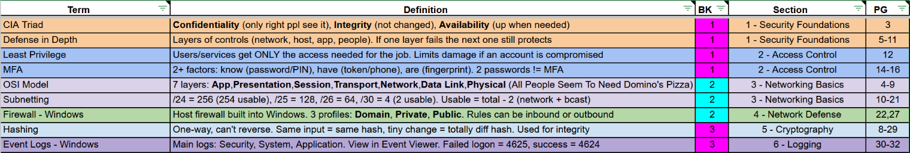
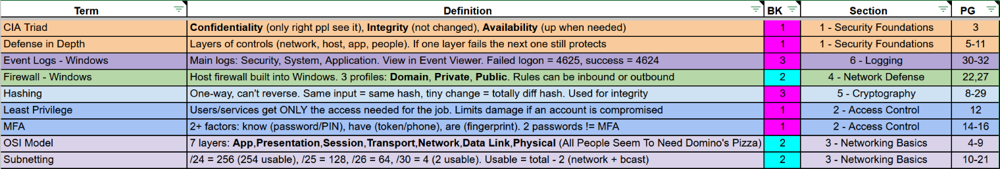
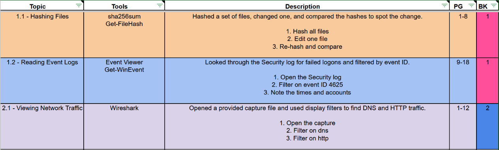

The Short Stack Method
How I index for a GIAC exam
I have about six years of cyber experience on both offense and defense, and I have taken six GIAC exams so far (GPYC, GXPN, GPEN, GFACT, GCIH, and GSEC). I study for about seven weeks for each one, and my average exam score is 95%. This is a write-up on how I make my index for those exams.
I have not reinvented the wheel here. My method is a fork of the Pancake Method by Lesley Carhart, aka Hacks4Pancakes, and I wanted to share my slightly different take on making the index. If you have not read her post, I highly recommend it. I call my version the Short Stack Method, because (according to IHOP) a short stack is three pancakes tall, and by the end of this you will have a stack of three indexes: the section index, the A-Z index, and the lab index (if your exam has CyberLive questions).
I have attached the Short Stack index template I use (more on it in Building the Index), and the materials I mention are linked in the What You Need section.
Section 01
What Is Indexing?
If this is your first GIAC exam, here is how it works. You will most likely take the SANS course that is associated with the GIAC exam. The exams are all open book (see GIAC's open book policy), so you create an index of important information and where to find it in your textbooks. That way, when you are taking the exam and get asked a question about a topic, you can find the answer quickly in the right book.
That said, GIAC exams are timed, so you do not have time to look up every question. If you try, you will run out of time before you get through the whole exam.
After going through this whole process (which I talk about below), I find that I rarely use my index during the exam. Because of the amount of work that goes into my index, it feels a little silly sometimes, but I know that if I did not make my index this way, I would need it way more. So please make an index, even if you do not think you need one or are thinking about getting someone else's (which you should not do). Taking the time to make the index helps you learn the material, not just take the exam and brain dump it afterward. And why leave a $9,000 to $11,000 course and exam up to chance or another person's index?
How you index is all up to you, but this is how I do it, and it has worked great for me.
Your Course Books
Your course could come with a few types of books. Every course has textbooks, which are just knowledge. If your exam has CyberLive questions, your course will also come with workbooks, which have the labs in them, and some courses also come with Lightning Lab books. You treat the Lightning Lab books the same as the workbooks. If your exam has no CyberLive questions, you will most likely only be working with the textbooks.
The Process at a Glance
Here is the whole process, start to finish:
- Set up a textbook with its book and section tabs.
- Read and highlight the book.
- Build the section index with the terms, definitions, book, section, and page.
- Take the quiz for that book, then repeat steps 1-4 for every textbook.
- Build the A-Z index from your section index.
- If your exam has CyberLive questions, index the workbooks, do the labs, and do the CTF.
- Print your indexes and set up your binder.
- Final prep: retake the quizzes, take the practice exams, rest the day before, and take the exam.
Section 02
My Study Schedule
I am a full-time student, I work part time, and I still study for other certs (CRTO, COAE, CPTS, etc.). I also have other responsibilities while doing my SANS coursework, and I still enjoy my hobbies daily. With all that being said, I spend an average of 4-5 hours a day on the SANS coursework for the respective GIAC cert.
I try to be done with all the textbooks (fully indexed and all quizzes taken) about three weeks before my exam date. That gives me time to index the workbooks, do the labs, do the CTF, and take the practice exams. For exams with no CyberLive questions, I have more time to index and study the material from the textbooks.
Section 03
What You Need
Here is what I use to set up my books and binder:
| Item | Price | Why I use it |
|---|---|---|
| 30-hole binder | $15 | When I am looking for terms as fast as I can, I think I would tear the pages out of a 3-ring binder. |
| Hole punch | $20 | Punches my index pages for the 30-hole binder. |
| Highlighters or Zebra highlighters | $8 or $10 | For color-coding each section. |
| Sharpie | $5 | For labeling the book covers, book tabs, and section tabs. |
| Tabs (Pastel) | $6 | Large and sturdy book and section tabs. I can flip through the whole book by holding onto them, which comes in handy when frantically looking for a page during the exam. |
Section 04
Setting Up Your Textbooks
I only set up one book at a time, because it lets me skim the book and start mentally prepping for the topics the book is about to cover.
Book Tabs
First, I use a Sharpie to mark all my textbooks on the front with large numbers for what they are: 1, 2, 3, etc.
Next, I take the tabs that I only use as book tabs, not section tabs. These are the ones with the pink or blue lines on the top and bottom of the tab and white space in the middle. Starting with the first book, I place a tab at the top far left, behind the main cardstock page, so it sticks out of the top of the book, and label it with the matching number using a Sharpie. When you move on to the next book, place its tab right next to where you placed the first one. If the two tabs were on the same page, the right edge of Book 1's tab would be touching the left edge of Book 2's tab. That way, if you lay the books on top of each other, the tabs sit side by side and do not overlap. Keep doing this until you get to the end, then just start over on the left side.
Section Tabs
Do not write the numbers on the section tabs as you go. Wait until every section tab in the book is placed and you are happy with the placement.
Next come the section tabs. These go on the Course Roadmap page at the start of each section (the one that lists the other sections with an arrow showing which section you are on). If the Course Roadmap is on the left page, the tab goes on the left side of that page, and if it is on the right page, the tab goes on the right side. That way, when the book is closed and facing you, all the section tabs stick out on the right side of the book.
I start with orange and place it at the top of the Course Roadmap page. This will be Section 1. Then I go to the next section and do the same thing with the next color, dark blue, placing it just below where the first tab sits. Rinse and repeat until every section of the book has a tab, following along with the index template's colors to keep them in order. Once you get to the last color, just start over back at orange.
This will take some guesstimating, because the goal is to have all your section tabs visible from the outside, with Section 1 at the top and your very last section at the very bottom. That way, no section tabs are hidden behind the others, because a hidden tab makes finding your section more difficult. You may have to go back and readjust the tabs so that all of them are visible.
For the specific tabs I use, see What You Need.
Once you are happy with the tab placement, write the section numbers on them with a Sharpie. Start with 1 and just count up across all the textbooks, so if the last section of Book 1 is 12, the first section of Book 2 will be 13.
Section 05
Reading and Highlighting
For the reading, you will need the highlighter that matches that section's tab color. Section 1 is orange, so I grab the orange highlighter, and as I read through the section, I highlight the things I think are important and that I should know for that section. This is very subjective, because everyone will think different things are important, but the main thing here is to be selective. If you highlight everything, nothing is important. The things you highlight will also guide what goes into your index, so when you sit down to build it, your highlights are your starting point. When you are taking the exam, hopefully the things you highlighted will be the information you need (or close to it), and the highlighting makes it fast to find and eye-catching. Once you have gone through the section, change your highlighter to the next color and do the same thing.
I like to read three sections and then go to my index and start filling it in. There is no rhyme or reason to this. I have played around with reading the whole book and then indexing, and with indexing one section at a time, but I just like three at a time.
Videos
I typically do not watch all of the videos. If there is a topic or page I am having trouble understanding, or I want to know more about it because I am interested, I will find that video and watch it. I will typically jot this extra information down on the page I watched the video for. This usually locks it into my head, and I do not even need the extra notes, but without making the notes, this would not have happened.
Section 06
Building the Index
I fill out my index on my computer in Google Sheets, Excel, or LibreOffice Calc. Each row has a term, a definition, the book number (BK), the section number and title, and the page number (PG). My template has three tabs: How to Use, Section Index, and Lab Index. The header row stays on screen while you scroll, each column header has a note you can hover over for a reminder, and the PG column is set to text so page ranges like 5-8 do not turn into dates. Here is an example of what it looks like:

Term
The term goes on the far left (CIA Triad). Try to make it something you would remember. It does not have to be verbatim. Once all the textbooks are indexed, you will make a copy of this index and sort it A-Z by term, so think about which word will stand out to you when you get asked a question. For example, if I have a term about Windows Firewall, I know the word "firewall" will stand out to me more than "Windows," so I will call the term "Firewall - Windows." That way, I can find it faster once the index is sorted A-Z.
Definition
The definition goes in the middle. Try to keep it short, with just enough information to jog your memory, plus things you know you will not remember but think you should (long numbers, file locations, protocols, etc.). Again, this is all personal preference. As you can see from the example, mine has some shorthand, and it does not really read nicely, but I know what I mean, and that is what matters.
Try to keep the definition on one line in the index. Again, if you fill your definition with all this information, none of the information will be important. Be selective.
For the terms and definitions, you should also bold the things that are important so they stand out to you. I always bold commands and acronyms (nmap -sV X.X.X.X, CDP).
How Many Terms?
There is not a set number of terms you need to have. It is all up to you. Personally, I would rather have too much, but again, this is for you. If you struggle with a specific topic, maybe you will have more terms for it, and if you are solid on a topic, maybe you will have fewer and they will be very condensed.
I would still recommend having terms in there even if you are solid on a section, because maybe the question that gets asked is very pointed, or all the answers could be right but one is more right than the others. You do not want to waste time on the exam looking for that one page out of six or more books because you thought you knew the information front to back.
Remember, the index does two things: it helps you find things during the exam, and it helps you explain topics and concepts in your own words, which makes you understand the topic better.
If there is a term or something that is not covered in the books in detail and you do not know it, add it to your index (this is very rare). It is better to have it in your index. For example, if a page mentions Remote Desktop Protocol (RDP) but RDP is not the main focus of that page, I would still add RDP as a term, put the info I need about it in the definition, and list the page where it was mentioned. Sometimes I even make notes in my book with more information on something if I go look it up.
Book, Section, and Page Columns
After you have done this for the whole section, fill in the book number (1), the section number and title (1 - Security Foundations), and the page number where the information is (5, 5-8, or 5, 9).
Color Coding
The template colors the index for you. In the Section column, type the section number, a dash, and the title (1 - Security Foundations), and the Term, Definition, Section, and PG columns turn the same color that section was highlighted in. Section 1 was highlighted in orange, so those columns turn orange. In the BK column, type the book number and it turns the same color as that book's tab: pink for odd books and blue for even books. If a row stays white, check that the Section starts with a number and a dash. Continue doing this for the rest of the sections in that book.
Section 07
Quizzes and the A-Z Index
Quizzes
Once the whole book is read, highlighted, and indexed, it is time to take the quiz for that book. This is the first trial run for my index. I try to wait a day after I finish the book to take the quiz, so the information is not super fresh and I have to rely on my index a little more than if I had just finished reading the book.
The quizzes are great because if you get a question wrong, it tells you the section and page where you can find the answer and why it is the answer. I use this to adjust my index, whether that is adding information to a definition, adding terms, or making something clearer because I could not find it quickly in the index or the book. I repeat this process until I get 100% on the quiz.
Now continue this whole process (tabs, reading and highlighting, building the index, and the quiz) for all of the textbooks.
The A-Z Index
Once all the textbooks are done, I duplicate the Section Index tab, rename the copy A-Z Index, and use the filter arrow on Term to sort it A to Z. The colors stay correct after sorting. This way, if I know the term I am looking for, I can use the A-Z index, and if I know the section, I can use the section index.
Here is the same example sorted A-Z. This is the rainbow:

If you add anything to your index later, add it to the section index and just redo the steps above.
No CyberLive questions? Skip the workbooks and jump to printing and binder setup →
Section 08
Indexing the Workbooks (CyberLive)
If your exam has CyberLive questions, the process is very similar to indexing the textbooks. Everything in this section also applies to Lightning Lab books.
Workbook Tabs
First, I use a Sharpie to mark the workbooks on the front with large labels for what they are: WB1, WB2 (Workbook). For the book tabs, I use the same striped book tabs as the textbooks. The first workbook's tab goes at the top far left, behind the first cardstock page, and the second workbook's tab goes at the top far right, so both stick out of the top of the book. I label these tabs WB1 and WB2 with a Sharpie. The section tabs go on the first page of each lab (for example, Lab 1.1: Hashing Files), on the left or right side of the page just like the textbooks, so when the book is closed and facing you, the section tabs stick out on the right side.
Go through the whole workbook and add all the section tabs before writing any numbers on them. The workbooks have way more sections and tabs than the textbooks, so it is okay if you have to start over at the top of the right side again. You will end up with two rows of tabs. You will also need more room on these tabs, because you label them in the format #.#, so make sure each tab has room to write the whole number with a Sharpie without it being covered by the previous tab.
I label the workbook sections this way because if you know Book 3 talked about a specific tool, you can quickly tell that the workbook section with the lab that used it has to start with a 3.
Reading and Highlighting
From here, read the workbook and highlight it just like the textbooks, except this time I highlight any commands I will run in red.
The order you go in next is personal preference, but I like to read the whole workbook and make its index before I do the labs. Just like the textbooks, I read and highlight three labs, then add them to my index. That way, when I spin up my VMs and get everything connected, I can just plug away at the labs without having to stop, read, and come back to the VM. This is the same reason I do not do the labs as I read through the textbooks. I just personally do not like it.
The Lab Index
For each lab, my lab index has:
- Topic: the section number and title (1.1 - Hashing Files)
- Tools: all the tools that were used (sha256sum, Get-FileHash). I do not put the whole command, just the tools.
- Description: a short description of what I did in the lab and the vague, general steps. Unlike the section index, you do not want to keep this on one line. Wrap the text here.
- Page (PG): the page range (1-8)
- Book (BK): the workbook number (1)
Here is an example of what my lab index looks like:

I do this for every lab. The template colors each new lab row with the next section color in order, starting with orange, just like the textbooks. The BK column turns hot pink for WB1 and royal blue for WB2. These are different shades from the textbook pink and blue, so a workbook row never looks like a textbook row.
Doing the Labs
Once the whole workbook is indexed, I do all the labs and make notes in the workbook: tips, more information about what I am doing and why, alternate commands, anything that would help me do it again as smoothly as possible. I also make a note of the more complicated labs and the labs I struggled with. Once Workbook 1 is done, I do the same thing for Workbook 2.
The CTF
Once both workbooks are indexed and all the labs are done, if there is a CTF, I do it next, taking notes of what I did along the way as if I were writing a report. My thought process and commands are the two main things. I then clean up the CTF report and include it in the Additional Resources section of my binder (see Printing and Binder Setup).
The CTF is great practice for all the skills you just learned in the labs. It will also help further identify any weak spots you can go back and redo.
Section 09
Printing and Binder Setup
Printing
I print all my indexes landscape, double-sided, and in color. In Excel, the template is already set up to print landscape, one page wide, with the header row on every page and only the rows you have filled in. In Google Sheets or LibreOffice Calc, set landscape and fit to width yourself when you print.
Binder Order
- Section index: in front of the first divider.
- A-Z index: after the first divider.
- Lab index: after the A-Z divider (CyberLive exams only).
- Course index: if the course comes with a premade index, I print it out and put it in its own section.
- Additional Resources: all the course handouts that come with it (Metasploit cheat sheet, PowerShell cheat sheet, TCP/IP cheat sheet, etc.), any other cheat sheets I make or find helpful, and my CTF report.
CyberLive exam? Skip ahead to final prep for CyberLive exams →
Section 10
Final Prep (Exams Without CyberLive)
If your exam has no CyberLive questions, you are done indexing.
Retake the Quizzes
Before the practice exams, I take all the quizzes again, making sure I get 100% on each one before moving on to the next quiz, again refining my index or doing some more studying.
Practice Exams
For this example, let's say my exam is on a Friday. I take my first practice exam on the Monday of exam week.
For the first practice exam, I do not print out my index yet. I use it on my computer, but I find things with the scroll wheel, not Ctrl+F, as if I had the physical index. This will help you get used to the layout of your index and build muscle memory. If I get a question wrong, I quickly write down the topic it was on and move on so I do not waste exam time. Once the practice exam is done, I go back and review the topics I missed, adjusting my index and adding any additional notes to my textbooks.
I keep doing this until my second practice exam on Wednesday.
For the second practice exam, I print out my indexes (section index and A-Z index; see Printing and Binder Setup). I take the practice exam the same way, quickly writing down any topics I got wrong and need to circle back to, or anything I need to fix in my index.
After the practice exam, on the same day, I fix all of this. Most of these changes are small, so I just write them in the margins of my index with a pen. For bigger changes, I edit the index on the computer and reprint just that page. I also touch up any topics I am still struggling with on Wednesday.
The Day Before
On Thursday, I relax. I do not do any studying, and I try to do things I like and that are outside, because chances are you have not touched much grass while studying for this exam (I know I don't). Not studying the day before is crucial. All the information you are going to know for the exam is already in your brain. Chances are any cram studying you do will not be worth the squeeze, and you will walk into the exam worn out instead of fresh.
Exam Day
I try to schedule my exams a few hours after lunch, so I can spend the morning warming up my brain without rushing, and I get to eat lunch and not take the exam hungry. I stick to my normal routine (sleep, food, drinks, times). I do not want to eat something I have never had before and all of a sudden fighting my stomach while trying to take the exam.
About two hours before my exam time, I take all the quizzes again. These should go by pretty fast, and you should still be scoring almost 100%. If not, do not stress. The important thing is to start getting your memory jogging for the exam you are about to take. Once you have taken all the quizzes again, if you have time and want to take another one or brush up on something, do it, but this is not a frantic cram study session. It is just a refresher session.
Then go crush the exam and enjoy that new cert!
No CyberLive questions? You are done prepping. Skip ahead to using your indexes on the exam →
Section 11
Final Prep (CyberLive Exams)
Retake the Quizzes
Before the practice exams, I take all the quizzes again, making sure I get 100% on each one before moving on to the next quiz, again refining my index or doing some more studying.
Practice Exams
For this example, let's say my exam is on a Friday. I take my first practice exam on the Saturday before.
For the first practice exam, I do not print out my index yet. I use it on my computer, but I find things with the scroll wheel, not Ctrl+F, as if I had the physical index. This will help you get used to the layout of your index and build muscle memory. If I get a question wrong, I quickly write down the topic it was on and move on so I do not waste exam time. Once the practice exam is done, I go back and review the topics I missed, adjusting my index and adding any additional notes to my textbooks. I also work through any labs that use techniques related to the questions I got wrong or was not confident on in the practice exam.
I keep doing this until my second practice exam on Tuesday.
For the second practice exam, I print out my indexes (section index, A-Z index, and lab index; see Printing and Binder Setup). I take the practice exam the same way, quickly writing down any topics I got wrong and need to circle back to, or anything I need to fix in my index.
After the practice exam, I take the rest of Tuesday and Wednesday to fix all of this. Most of these changes are small, so I just write them in the margins of my index with a pen. For bigger changes, I edit the index on the computer and reprint just that page. I also redo any labs I still feel weak in.
The Day Before
On Thursday, I relax. I do not do any studying, and I try to do things I like and that are outside, because chances are you have not touched much grass while studying for this exam (I know I don't). Not studying the day before is crucial. All the information you are going to know for the exam is already in your brain. Chances are any cram studying you do will not be worth the squeeze, and you will walk into the exam worn out instead of fresh.
Exam Day
I try to schedule my exams a few hours after lunch, so I can spend the morning warming up my brain without rushing, and I get to eat lunch and not take the exam hungry. I stick to my normal routine (sleep, food, drinks, times). I do not want to eat something I have never had before and all of a sudden fighting my stomach while trying to take the exam.
About two hours before my exam time, I take all the quizzes again. These should go by pretty fast, and you should still be scoring almost 100%. If not, do not stress. The important thing is to start getting your memory jogging for the exam you are about to take. Once you have taken all the quizzes again, if you have time and want to take another one or brush up on something, do it, but this is not a frantic cram study session. It is just a refresher session. For a CyberLive exam, this is also a good time to read through the labs or your CTF report again.
Then go crush the exam and enjoy that new cert!
Section 12
Using Your Indexes on the Exam
This is where all the tedious work you have done comes in handy! When I get to a question on the exam that I am not at least 80% confident on, I look it up.
The Section Index
The first thing I ask myself is: do I know the section where I can find this information? The section index should always be your go-to, because it is quicker to look through than the rainbow that is the A-Z index.
Because of how the index is laid out, your eyes will start on the left side with the term, then move left to right to the definition. If that is still not enough, you will see the book it is in, followed by the section and the page. Say it is Book 3, Section 20, pages 67-72. Grab Book 3 and look for your Section 20 tab. If the page is toward the end of Section 20, grab the Section 21 tab and work backwards. If it is toward the front, grab the Section 20 tab and work forwards. This is also where the sturdy tabs come in handy. Then flip to pages 67-72, and hopefully you have also highlighted the answer to the question you were asked.
I have found this is the most effective method, and it leaves you with no guesswork on where things are. Hopefully this helps you understand the method to the madness and all the tedious work you have put into your index.
The A-Z Index
For finding terms when you do not know which section they are in, this is where the A-Z index comes in handy. With my firewall example from earlier, hopefully your terms are easy to find and you do not have to sort through a bunch of "Windows <term>" entries, because that would slow you down.
When You Cannot Find It
If you cannot find where the information you are looking for is, skip the question and come back to it. You can skip a question and come back to it later, but once you answer a question and move on, there is no going back.
When you get back to the questions you skipped, it is time to look in the Additional Resources section of your binder (the Hail Mary section). If you still cannot figure it out, depending on how much time you have, either make an educated guess or keep flipping through your books and index. Just do not leave it unanswered.
CyberLive Questions
The workbooks work mostly the same way. You should have an idea of which lab you are looking for, and ideally you can already do what the question is asking, especially if you did the CTF.
When you get to the lab questions, move all your textbooks out of the way. Put them on the floor or somewhere else, because you will not need them.
If you need to use your lab index, look at the left side with the topic, and you should know exactly which lab it is. You can quickly look at the tools and description to confirm it. Because the description has a blank line between the summary and the steps, and another after the last step, all the steps performed in the lab are easy to read. Again, scan the row left to right. You will already have the section number, and since there are only two colors for the workbooks, you will see the hot pink or royal blue at the far right in the BK column. Then you can quickly thumb through your tabs to find the steps you are looking for.
But again, you should know how to do all the labs by muscle memory. If you rely on the index to do all the labs, you will probably run out of time, and the lab questions are weighted significantly more than the multiple choice questions.
Section 13
The template
The Short Stack index template I use, with the section and book colors already set up. It opens in Excel, Google Sheets, or LibreOffice Calc, and the How to Use tab walks you through it.
Section 14
Final Thoughts
Since you have made it this far, thank you for taking the time to read this. It is very much appreciated! I wanted to write something for everyone struggling with the mountain of information these exams cover, and to make that daunting task feel as smooth and bite-sized as possible. I hope it helps.
If you have a way you think is better, or any improvements, please reach out to me at contact@cnm-tx.com. (Please do not ask for my indexes. I will not give them out.)
Feel free to connect with me on LinkedIn as well.